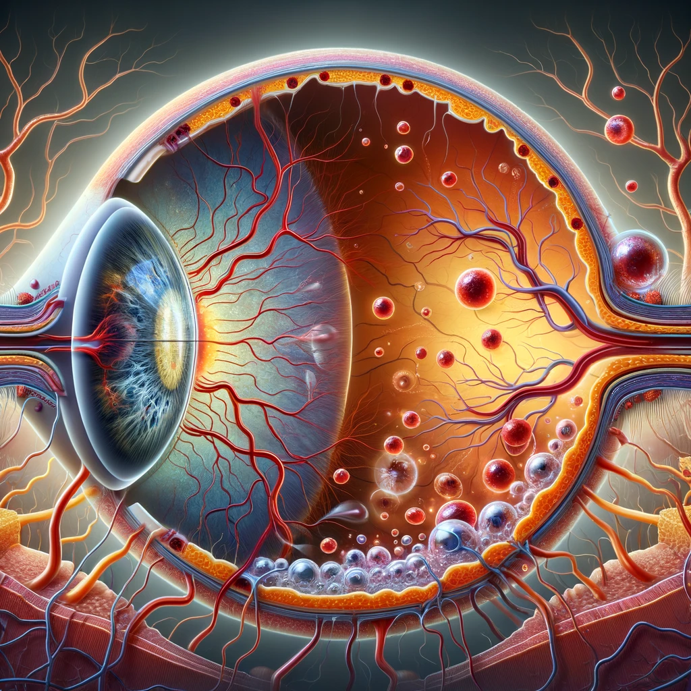
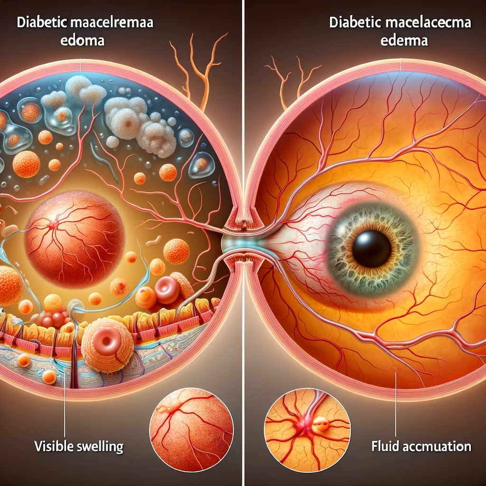
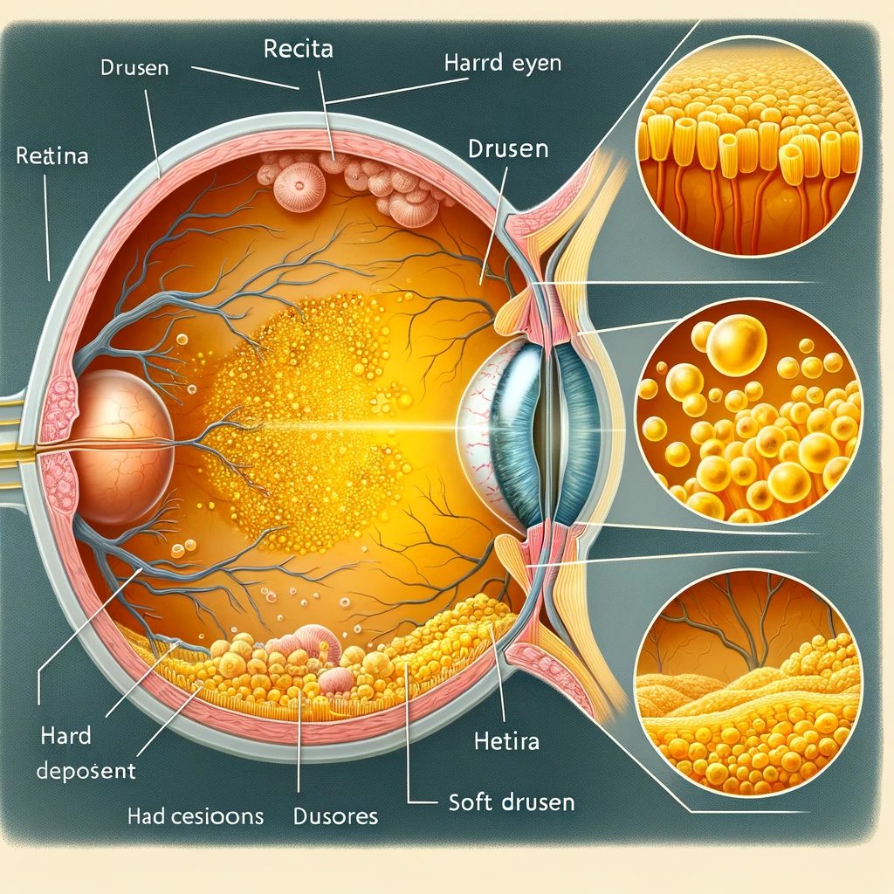

Retinal Tıbbi Görüntü Sınıflandırma Web Sitesine Hoş Geldiniz
Burada CNV, DME, DRUSEN ve NORMAL gibi çeşitli göz hastalıkları hakkında bilgi bulabilirsiniz.
CNV (Choroidal Neovascularization)
Koroidal Neovaskülarizasyon (CNV), retina altında yeni kan damarlarının büyümesi ve görme bozukluklarına neden olması durumudur. Bu yeni damarlar, sızıntı yaparak retina dokusuna sıvı ve kan sızmasına neden olabilir, bu da görme bozukluğu ve skarlaşma ile sonuçlanabilir. CNV, yaşa bağlı makula dejenerasyonunun (YBMD) ileri evrelerinde yaygın olarak görülür.
Belirtiler:
- Görme alanında karanlık veya boş alanlar
- Düz çizgilerin dalgalı veya kırık görünmesi (metamorfopsi)
- Renkleri daha az parlak veya farklı görme
- Görme keskinliğinde azalma
- Ani görme kaybı
DME (Diabetic Macular Edema)
Diyabetik Makula Ödemi, diyabetik retinopati'nin önemli bir komplikasyonudur. Retina'nın merkezinde bulunan ve net görmemizi sağlayan makulada sıvı birikmesiyle karakterize edilir. Makula, detayları net bir şekilde görmemizi sağlar ve sıvı birikmesi sonucu şişme ve kalınlaşma meydana gelir, bu da görme bozukluğuna veya kaybına yol açar.
Belirtiler:
- Bulanık görme
- Çift görme
- Renk algısında değişiklikler
- Görüş alanında karanlık veya boş alanlar
- Okuma veya ince detayları görmede zorluk
DRUSEN
Drusen, retina altında biriken sarımsı yağlı protein ve lipid birikintileridir. Drusen, yaşa bağlı makula dejenerasyonunun (YBMD) erken bir belirtisi olabilir, ancak herkes için görme kaybına yol açmaz. Drusen genellikle iki türde bulunur: yumuşak drusen ve sert drusen.
Belirtiler:
- Görme alanında boş veya karanlık noktalar
- Renkleri daha az canlı görme
- Merkezde bulanık veya dalgalı görme
Hastalıkların Karşılaştırılması
TBu fotoğraf, CNV (Choroidal Neovascularization), DME (Diabetic Macular Edema), DRUSEN ve NORMAL göz koşullarının OCT (Optik Koherens Tomografi) görüntülerini karşılaştırmaktadır. CNV'de retina altında anormal damarlar ve sıvı birikimi görülür. DME'de diyabet nedeniyle makula bölgesinde sıvı birikimi vardır. DRUSEN'de retinanın altında sarımsı tortular birikir. NORMAL görüntüde ise sağlıklı bir retina yapısı, herhangi bir anormal değişiklik veya sıvı birikimi olmadan gösterilmektedir. Bu görüntüler, bu dört farklı göz durumunun retina yapısındaki değişikliklerini net bir şekilde ortaya koymaktadır.